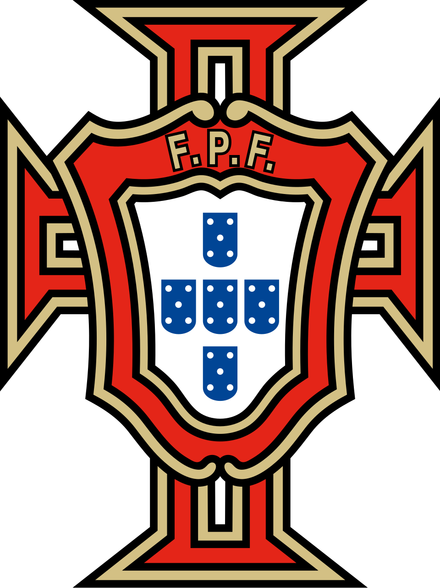

报告生成日期：2026年5月19日 · 2026美加墨世界杯
主教练：罗伯托·马丁内斯 (Roberto Martinez)
队长：克里斯蒂亚诺·罗纳尔多 (Cristiano Ronaldo)
世界杯参赛次数：第9次（连续第7届）
世界杯最佳成绩：季军（1966年）
上届（2022）成绩：八强（1/4决赛0-1负于摩洛哥）
小组赛：K组
同组对手：刚果民主共和国、乌兹别克斯坦、哥伦比亚
首战：6月17日 vs 刚果民主共和国（休斯顿NRG体育场）
次战：6月23日 vs 乌兹别克斯坦（休斯顿NRG体育场）
末轮：6月27日 vs 哥伦比亚（迈阿密硬石体育场）
* 葡萄牙公布27人名单，最终1人裁减。以下为预测最终26人（保留4门将）
| 位置 | 球员姓名 | 英文名 | 所属俱乐部 |
|---|---|---|---|
| GK | 迪奥戈·科斯塔 | Diogo Costa | 波尔图 |
| GK | 若泽·萨 | José Sá | 狼队 |
| GK | 鲁伊·席尔瓦 | Rui Silva | 葡萄牙体育 |
| GK | 里卡多·维略 | Ricardo Velho | 根克勒比利吉 |
| DF | 迪奥戈·达洛特 | Diogo Dalot | 曼联 |
| DF | 马特乌斯·努内斯 | Matheus Nunes | 曼城 |
| DF | 内尔松·塞梅多 | Nélson Semedo | 费内巴切 |
| DF | 若昂·坎塞洛 | João Cancelo | 巴塞罗那 |
| DF | 努诺·门德斯 | Nuno Mendes | 巴黎圣日耳曼 |
| DF | 贡萨洛·伊纳西奥 | Gonçalo Inácio | 葡萄牙体育 |
| DF | 雷纳托·维加 | Renato Veiga | 比利亚雷亚尔 |
| DF | 鲁本·迪亚斯 | Rúben Dias | 曼城 |
| DF | 托马斯·阿劳霍 | Tomás Araújo | 本菲卡 |
| MF | 鲁本·内维斯 | Rúben Neves | 利雅得新月 |
| MF | 萨穆埃尔·科斯塔 | Samu Costa | 马略卡 |
| MF | 若昂·内维斯 | João Neves | 巴黎圣日耳曼 |
| MF | 维蒂尼亚 | Vitinha | 巴黎圣日耳曼 |
| MF | 布鲁诺·费尔南德斯 | Bruno Fernandes | 曼联 |
| MF | 贝尔纳多·席尔瓦 | Bernardo Silva | 曼城 |
| FW | 若昂·费利克斯 | João Félix | 利雅得胜利 |
| FW | 弗朗西斯科·特林康 | Francisco Trincão | 葡萄牙体育 |
| FW | 弗朗西斯科·孔塞桑 | Francisco Conceição | 尤文图斯 |
| FW | 佩德罗·内托 | Pedro Neto | 切尔西 |
| FW | 拉斐尔·莱奥 | Rafael Leão | AC米兰 |
| FW | 贡萨洛·格德斯 | Gonçalo Guedes | 皇家社会 |
| FW | 贡萨洛·拉莫斯 | Gonçalo Ramos | 巴黎圣日耳曼 |
| FW | 克里斯蒂亚诺·罗纳尔多 | Cristiano Ronaldo | 利雅得胜利 |
⚠️ 最终将裁减1人（最可能为第4门将里卡多·维略），届时正式26人名单已定。
| 指标 | 数据 |
|---|---|
| 世界级球星数量 | 6-7人（B费、B席、迪亚斯、莱奥、维蒂尼亚、努诺·门德斯、C罗） |
| 五大联赛豪门主力 | 12+人 |
| 金球奖前30候选 | 3-4人 |
| Game-changer级别 | B费（创造力）、莱奥（突破）、C罗（终结） |
葡萄牙阵容的星光熠熠是欧洲乃至世界顶级的。布鲁诺·费尔南德斯本赛季在曼联贡献了联赛15球+11助攻的两双数据，是英超最具创造力的中场发动机之一；贝尔纳多·席尔瓦在曼城继续扮演"球场大脑"角色，场均1.8次关键传球+85%+传球成功率的技术精度令人放心。维蒂尼亚和若昂·内维斯在巴黎圣日耳曼的中场组合日趋成熟，两人本赛季在法甲合计送出14次助攻，控球能力和向前传球的视野已跻身欧洲顶级中场行列。锋线上，41岁的C罗本赛季在利雅得胜利打进28球——尽管在沙特联赛，但其禁区内的嗅觉和无球跑动仍是世界级水准；拉斐尔·莱奥在AC米兰的左路突破是意甲最具威胁的个人武器之一，场均1.7次成功过人。鲁本·迪亚斯虽因腿筋伤势自3月中旬以来未登场，但作为曼城上赛季的核心中卫，他的领袖气质和防守组织能力是葡萄牙防线的基础。
葡萄牙四条线的实力分布呈现出典型的"中前场厚、后场不均"特征。中场是绝对强点：B费、B席、维蒂尼亚、若昂·内维斯、鲁本·内维斯组成的5人轮换，放眼本届世界杯也是前三甲的中场配置——技术、创造力、对抗、跑动覆盖一应俱全。锋线看似人数最多（7人），但存在两个隐忧：一是C罗41岁高龄需要轮换保护体能，二是贡萨洛·拉莫斯自2022世界杯高光后状态持续低迷，本赛季在巴黎仅打入7球，效率远不如预期。莱奥和佩德罗·内托的边路突破能力出色，但格德斯和特林康在俱乐部的表现平平。后防线存在结构性隐患：鲁本·迪亚斯的伤病是最大X因素，若他不能以100%状态出战，左中卫位置上的伊纳西奥虽然出球能力出众但对抗偏软，阿劳霍大赛经验不足；右后卫位置上，坎塞洛和达洛特的进攻属性大于防守，面对强力边锋可能成为突破口。
首发11人与替补的差距在中场最小——若昂·内维斯、鲁本·内维斯、萨穆·科斯塔都可以无缝替换首发三人组，真正实现了"一波人倒了另一波人顶上"的中场深度。锋线方面，莱奥、内托、孔塞桑可以提供不同的边路变化方案，但中锋位置上除了C罗之外，唯一正牌中锋拉莫斯状态成疑，马特乌斯·努内斯和菲利克斯虽可客串但效率打折。后防是深度最薄弱的环节：如果鲁本·迪亚斯无法首发，伊纳西奥和阿劳霍的中卫组合缺乏大赛检验；边后卫位置上，塞梅多本赛季在费内巴切状态起伏，雷纳托·维加在比利亚雷亚尔更多踢中场而非边后卫。整体来看，葡萄牙拥有约18名"值得信赖"的轮换球员，面对密集赛程具备一定的轮换资本。
| 指标 | 数据 |
|---|---|
| 全队总身价（估计） | 约7.8亿欧元（32强前5水平） |
| 平均年龄 | 约27.8岁（经验与体能平衡） |
| 核心球员平均年龄 | 维蒂尼亚26岁、若昂·内维斯21岁、莱奥26岁——黄金当打之年 |
| 老龄化风险 | C罗（41岁）、佩佩未入选（39岁退役）——已更新换代 |
葡萄牙的全队总身价保守估计在7.5-8亿欧元区间，在32支参赛队中稳居前五，与英格兰、法国、巴西处于同一梯队。年龄结构呈现出健康的"老中青"金字塔：41岁的C罗是精神领袖和终结者，28-30岁的B费、B席、迪亚斯构成中后场的核心骨架，21-26岁的若昂·内维斯、维蒂尼亚、莱奥、伊纳西奥代表着未来的希望。值得一提的是，本届大名单中没有了39岁的佩佩，这意味着葡萄牙的后防线完成了实质性换血——虽然短期可能带来经验流失，但从长期发展和体能角度看是必要的一步。
维度一总评：86分 × 30% = 25.8分
罗伯托·马丁内斯是葡萄牙队史上最成功的"班底型"教练之一，他在2024欧洲杯率队杀入半决赛，证明了其大赛带队能力。他的战术哲学以控球为基础（场均控球率常年60%+），崇尚前场压迫和流畅的进攻配合，这一点与葡萄牙的技术型球员天然兼容。然而，马丁内斯在比利时国家队的经历也留下了隐忧——"黄金一代"在2018世界杯和2020欧洲杯均未能突破半决赛，被批评为"捏合巨星能力不足"。来到葡萄牙后，他在2024欧洲杯1/4决赛对阵法国的点球大战中惜败，暴露了在关键淘汰赛中缺乏B方案的问题。不可否认的是，他的亲和力和人脉管理是强项，能照顾好包括C罗在内的更衣室巨星关系。
马丁内斯在葡萄牙主打4-3-3阵型，偶尔切换为4-2-3-1。这一阵型与葡萄牙现有的球员资源高度契合：维蒂尼亚-若昂·内维斯-B费的中场三叉戟在4-3-3体系中形成了"拖后组织+中场扫荡+前场串联"的完美分工。前场三叉戟中，莱奥（左边锋）、C罗（中锋）、B席/内托（右边锋）的组合具备速度和技术的双重威胁。但问题在于，马丁内斯的B方案长期被质疑——当4-3-3被对手针对性限制时（如对手摆出5后卫铁桶阵），葡萄牙往往缺乏变阵为双前锋或增加高中锋的战术储备。此外，马特乌斯·努内斯被列在后卫名单中，暗示马丁内斯可能考虑让他客串右后卫或中场的摇摆人角色，这既是灵活性也是不确定性。
葡萄牙的攻守转换在马丁内斯体系下呈现出"高控球、低转换"的特点——他们更倾向于通过控球来主导比赛节奏，而非快速反击。这在面对弱队时效果显著（控球率通常达到65-70%），但面对强队时，由攻转守的退防速度可能成为隐患。2024欧洲杯对阵法国的比赛中，葡萄牙在丢球后的第一道压迫线经常被姆巴佩等人的个人能力穿透，暴露出高位防线身后的空当。定位球方面，葡萄牙在2022世界杯上通过角球和任意球打入了3球（占比约30%），鲁本·迪亚斯和伊纳西奥在进攻端的高点具备不错的威胁。马丁内斯在备战期间公开表示已经针对定位球攻防进行了专项演练。
马丁内斯的临场指挥属于"稳健型"而非"冒险型"。他在比利时和葡萄牙国家队的换人数据显示，平均首次换人时间在第60-65分钟，偏晚但换人选择通常合乎逻辑。2024欧洲杯小组赛对阵土耳其的比赛中，他换上的若昂·内维斯直接改变了中场走势，体现了对比赛阶段的判断力。不过，在2018世界杯比利时对阵法国的半决赛中，他在落后后迟迟未做出进攻换人调整，被比利时媒体广泛批评。来到葡萄牙后，他在这方面有所改善——2024欧洲杯淘汰赛阶段，他的换人时机提前到了第55-60分钟。如果有加时赛和点球大战的准备，葡萄牙在2022世界杯上的点球表现尚可，但2024欧洲杯点球输给法国表明还有提升空间。
维度二总评：80分 × 20% = 16.0分
从2025年6月到2026年5月的12个月期间，葡萄牙在世界杯欧洲区预选赛中表现出色，在小组赛中取得了7胜2平1负的战绩，成功锁定小组头名直接晋级决赛圈。期间净胜球达到+18（打进32球失14球），体现了对阵弱旅时的稳定得分能力。友谊赛方面，葡萄牙安排了对阵荷兰（2-2平）、英格兰（1-0胜）、瑞典（3-1胜）的高质量热身赛，含金量十足。不过，预选赛客场1-2爆冷负于波黑的比赛是一个警示信号——那场比赛葡萄牙在上半场2球落后的情况下未能逆转，暴露出面对密集防守时耐心不足的老问题。
葡萄牙所在的欧洲区预选赛小组中，主要竞争对手是波黑和冰岛。波黑拥有哲科和皮亚尼奇等老将，但整体实力已大不如前；冰岛则失去了2016-2018年的黄金一代锐气。因此，葡萄牙的出线过程虽然有波折（负于波黑），但整体而言是"预期之内"的结果。值得肯定的是，葡萄牙在对阵小组后四名球队的6场比赛中保持全胜且场均净胜3球以上，展现了强队应有的虐菜稳定性。不过，由于预选赛对手整体实力偏弱（FIFA排名均在前40名之外），出线的"含金量"受到一定程度的削弱。这也是为何需要友谊赛对荷兰、英格兰的高强度来检验真实战力。
| 球员 | 2025-26赛季俱乐部表现 | 状态评级 |
|---|---|---|
| C罗（利雅得胜利） | 28球，各项赛事场均0.82球 | 🔥 火热（老而弥坚） |
| B费（曼联） | 15球11助攻（英超） | 🔥 火热 |
| B席（曼城） | 8球12助攻，关键传球80+ | ✅ 稳定 |
| 莱奥（AC米兰） | 11球9助攻（意甲） | ✅ 稳定 |
| 维蒂尼亚（巴黎） | 6球8助攻，场均传球成功率92% | 🔥 火热 |
| 若昂·内维斯（巴黎） | 4球6助攻，中场灵魂 | ✅ 稳定 |
| 鲁本·迪亚斯（曼城） | 3月中旬腿筋伤，缺席6周 | ⚠️ 隐患 |
| 拉莫斯（巴黎） | 仅7球，出场时间不稳定 | ⬇️ 低迷 |
总体来看，葡萄牙核心球员的俱乐部状态处于"积极的上升曲线"上。B费打出了加盟曼联以来数据最全面的一个赛季；维蒂尼亚在巴黎从角色球员成长为不可或缺的中场核心；C罗尽管在沙特联赛，但28球的产量证明他依然是世界级的终结者。最大的隐患是鲁本·迪亚斯的伤情——自3月中旬腿筋受伤以来，他在曼城几乎没有出场时间，世界杯首战（6月17日）距离现在刚好约两个月，恢复进度和比赛状态成疑。另一个令人担忧的是贡萨洛·拉莫斯，他在巴黎的出场时间被压缩，进球效率较2022-23赛季大幅下降，马丁内斯是否还信任他在大赛中扛起中锋位置值得关注。
维度三总评：82分 × 15% = 12.3分
葡萄牙自2002年以来连续7届参加世界杯，是欧洲最稳定的参赛队之一。历史最佳成绩是1966年的第三名（尤西比奥带领），2006年获得第四名（西班牙·斯科拉里执教，C罗首次世界杯之旅）。近三届世界杯成绩为：2014年小组出局、2018年16强、2022年8强——呈现稳步上升趋势。在欧洲杯历史上，葡萄牙是2016年欧洲杯冠军，2019年欧国联冠军——这两座奖杯证明了这支国家队具备在单届大赛中"不走寻常路"的夺冠能力。尤其2016年欧洲杯，葡萄牙在不被看好的情况下决赛击败法国夺冠，展现了坚韧的心理韧性和战术执行力。
葡萄牙的"老将带新"结构提供了宝贵的大赛经验资本。C罗参加6届世界杯（历史第一人）、6届欧洲杯，累计出场226次国家队，国际A级赛事出场数和进球数（143球）均为历史第一。B费、B席、迪亚斯都参加过两届世界杯和两届欧洲杯，大赛出场次数均超过15场。鲁本·内维斯参加过2022世界杯和2024欧洲杯，拥有欧冠联赛经验。经验相对缺乏的年轻球员中，若昂·内维斯（21岁）和贡萨洛·伊纳西奥（23岁）虽然国家队出场次数不多（10-15场左右），但在巴黎和葡萄牙体育的欧冠赛场上积累了不少硬仗经验。整个阵容的"大赛总出场次数"在32强中属于顶级水平。
葡萄牙在近5年大赛中的落后追分表现令人印象深刻。2022世界杯小组赛对阵加纳，先丢一球后2球逆转；2024欧洲杯小组赛对阵土耳其，先失球后2-1反超。这种"不从焦虑"的心理素质与C罗的存在密不可分——尽管争议不断，但他在困境中激发队友的能力是公认的。点球大战方面，葡萄牙在2022世界杯预选赛附加赛中点球击败北马其顿，但在2024欧洲杯1/4决赛点球输给法国——一正一负说明点球能力属于中等偏上。值得一提的是，2016欧洲杯决赛中，C罗开场25分钟伤退的情况下，葡萄牙依然在加时赛中击败了东道主法国——这是这支国家队"逆境韧性"的最佳证明。
维度四总评：88分 × 10% = 8.8分
| 对手 | FIFA排名（约） | 风格特点 | 葡萄牙胜率预估 |
|---|---|---|---|
| 刚果民主共和国 | 60-70名 | 非洲身体流，组织松散 | 75-80% |
| 乌兹别克斯坦 | 70-80名 | 中亚技术流，防守硬朗 | 80-85% |
| 哥伦比亚 | 15-20名 | 南美技术流，有爆冷能力 | 55-60% |
葡萄牙的小组签运堪称"上上签"。K组中，刚果民主共和国虽然拥有一些在欧洲踢球的球员，但整体战术纪律不足，葡萄牙的技术优势可以轻松压制；乌兹别克斯坦作为亚洲劲旅防守组织不错，但进攻端缺乏世界级球员，很难对葡萄牙的防线造成持续威胁。真正的挑战来自哥伦比亚——这支南美传统强队FIFA排名稳定在前20，拥有J罗（38岁但仍有一脚传球）、迪亚斯（利物浦边锋）等能在个人能力上匹配葡萄牙球星的队员。不过哥伦比亚近年的稳定性不佳，世预赛经历了一番波折才勉强出线。总体来看，葡萄牙正常发挥应能拿到小组头名。
作为K组头名出线后，葡萄牙在16强赛中将对阵L组第二名。L组目前由巴西、摩洛哥、海地、苏格兰组成——头名几乎锁定巴西，第二名很可能是摩洛哥或苏格兰。如果葡萄牙小组头名出线，16强大概率对阵摩洛哥——这支2022世界杯四强球队是葡萄牙的"苦主"（正是摩洛哥在2022年1/4决赛淘汰了葡萄牙）。若过关，8强可能对阵巴西和德国所在半区的胜者——无论面对哪支都是硬仗。若以小组第二出线，则16强大概率对阵L组头名巴西——这几乎就是"死亡路线"。因此对葡萄牙而言，小组赛拿下哥伦比亚、确保头名出线是决定整个赛程难度的关键。
葡萄牙的小组赛全部在美国举行：前两场在休斯顿（德州，室内空调球场NRG体育场，舒适度极高），第三场在迈阿密（佛罗里达，硬石体育场，6月底气温约30°C但同样室内）。三个比赛城市之间的移动距离控制得相当合理（休斯顿→迈阿密约2小时航班），不存在频繁转场的体力消耗。如果进入淘汰赛，可能的比赛城市分布在新泽西/达拉斯/洛杉矶等城市，赛程安排对葡萄牙的体能管理较为友好。唯一变数是6月27日最终小组赛到可能的16强赛之间只有3-4天的休息时间——这对41岁的C罗和伤愈复出的鲁本·迪亚斯是体能的考验。
维度五总评：88分 × 10% = 8.8分
C罗作为队长在葡萄牙国家队的地位和影响力无可撼动——他从18岁开始就是这支球队的灵魂人物，已经连续21年担任核心角色。在2022世界杯期间，C罗因在曼联的场外风波导致一定程度的更衣室分心（当时他与主教练桑托斯的关系紧张），但2024欧洲杯以来的氛围明显改善。马丁内斯上任后极力推崇"团队优先"文化，B费、B席与C罗的关系良好，年轻一代的若昂·内维斯和维蒂尼亚对C罗充满尊敬。不过，随着C罗年龄增长、部分球员（如若昂·菲利克斯在利雅得胜利与C罗做队友，但此前在切尔西/巴萨时期因情绪管理受质疑）的心理成熟度需要关注。整体而言，葡萄牙更衣室目前处于相对和谐的状态。
葡萄牙足协（FPF）是欧洲运作最规范的国家足协之一，近年在组织管理、基础设施建设（如葡萄牙足球城Cidade do Futebol）方面投入巨大。马丁内斯的合同覆盖到2026世界杯之后，不存在"合同到期"的不确定性。后勤保障方面，葡萄牙有完善的备战方案——他们在休斯顿和迈阿密附近已经预订了专门的训练基地。唯一的小变数是：葡萄牙国内对"马丁内斯是否真的能带领球队夺冠"存在一定的质疑声音（主要因为他比利时时期的遗憾历史），但这种质疑尚未影响球队的正常运转。
葡萄牙国内对国家队的世界杯期望值极高——这既是"2016欧洲杯冠军一代"的惯性期待，也是"C罗最后一届世界杯"的情怀加成。葡萄牙媒体以激情和挑剔并存著称，如果球队在小组赛阶段表现不佳（比如平乌兹别克斯坦或输哥伦比亚），舆论压力可能会迅速发酵。2022世界杯输给摩洛哥后，国内对桑托斯的战术安排进行了猛烈批评，这种"超高期望+极端批评"的媒体生态是一把双刃剑。好在马丁内斯在比利时就已经历过类似压力（比利时曾排名世界第一），如何管理外界噪音是他的经验优势。
维度六总评：80分 × 10% = 8.0分
葡萄牙核心球员本赛季的出场时间普遍在2500-3500分钟区间，处于正常偏高水平。维蒂尼亚和若昂·内维斯在巴黎圣日耳曼经历了三线作战（法甲+法国杯+欧冠），B费和达洛特在曼联的赛程同样密集——曼联虽然未进欧冠，但欧联杯同样消耗了大量体能。B席在曼城也是全程三线作战的主力。唯一"相对轻松"的是C罗——沙特联赛的赛程密度低于欧洲五大联赛，且他在赛季末段得到了适当轮休。值得关注的是，5月下旬到6月中旬的备战期只有约3周，这对需要恢复伤病的球员（如鲁本·迪亚斯）来说时间紧迫。
这是葡萄牙本届世界杯最大的不确定因素。鲁本·迪亚斯自3月中旬以来因腿筋伤势缺席了曼城的所有比赛，虽然他的名字出现在大名单中，但他的真实身体状态成谜——如果无法在世界杯前通过全强度训练，马丁内斯可能不得不在中卫位置做出让步。其他球员方面，贡萨洛·拉莫斯在巴黎赛季末段因脚踝轻伤缺席了2场，但已基本恢复；佩德罗·内托本赛季在切尔西经历了多次小伤（"玻璃人"体质），虽入选大名单但能否支撑连续高强度比赛存疑。没有球员有重大手术/长期伤病史（十字韧带等），这是唯一的安慰。
葡萄牙足协拥有欧洲一流的医疗与体能保障团队。在2024欧洲杯期间，葡萄牙的伤病管理效果获得了队员的正面反馈——几乎没有因伤病管理不当导致核心球员缺席比赛的情况。葡萄牙的备战计划中包括在休斯顿当地的合作医院和康复中心的预约，以及对鲁本·迪亚斯进行"个性化康复训练"的专项方案。历史上，葡萄牙在2016欧洲杯能在一路伤兵满营（C罗决赛伤退、佩佩半决赛前受伤）的情况下依然夺冠，部分原因正是其医疗团队的高效运作。
维度七总评：75分 × 5% = 3.75分
加权总分：83.45 / 100
实力评级：A（新的评级描述）
| 维度 | 得分 | 权重 | 加权贡献 |
|---|---|---|---|
| ① 阵容实力 | 86 | 30% | 25.80 |
| ② 战术体系与教练 | 80 | 20% | 16.00 |
| ③ 近期竞技状态 | 82 | 15% | 12.30 |
| ④ 大赛经验与心理素质 | 88 | 10% | 8.80 |
| ⑤ 分组及赛程影响 | 88 | 10% | 8.80 |
| ⑥ 团队凝聚力与场外环境 | 80 | 10% | 8.00 |
| ⑦ 体能储备与伤病控制 | 75 | 5% | 3.75 |
| 总分 | 83.45 | ||
🇵🇹 克里斯蒂亚诺·罗纳尔多
最后之舞的绝对主角。尽管运动能力不如巅峰，但禁区内的终结效率和跑位意识仍是世界级。大赛历史证明，永远不能低估他在关键时刻的爆发力。本届世界杯他的定位将直接影响葡萄牙的战术走向。
🇵🇹 布鲁诺·费尔南德斯
葡萄牙的进攻引擎。本赛季英超15球11助攻证明他是目前葡萄牙阵中最具创造力的一环。他的远射、直塞和定位球是葡萄牙破密集防守的三大武器，本届世界杯他的传球数据很可能决定葡萄牙的进球产量。
🇵🇹 鲁本·迪亚斯
防线的定海神针。腿筋伤势的恢复进度直接关系到葡萄牙的防守质量。如果他能以2022-23赛季的巅峰状态出战，葡萄牙的防线可以抗衡任何顶级攻击线。
🇵🇹 维蒂尼亚
低调的中场指挥官。本赛季在巴黎的蜕变令人印象深刻——他的控球和节奏控制能力让葡萄牙的进攻能够从容推进。面对高强度逼抢时的出球选择，将成为葡萄牙能否在两回合淘汰赛中保持控球优势的关键。
🇵🇹 拉斐尔·莱奥
左路的爆点制造机。当葡萄牙需要打破僵局时，莱奥的个人突破是最直接的武器。他的状态波动性是一把双刃剑——好的莱奥可以单挑整条防线，低迷的莱奥则会变成进攻终结者。
🇵🇹 佩德罗·内托
X因素。在切尔西本赛季虽然饱受伤病困扰但天赋毋庸置疑，他在右边路的突破能力能有效分担B席的进攻组织压力。如果能保持健康，他是马丁内斯在淘汰赛阶段的秘密武器。
| 对手 | 预判结果 | 理由 |
|---|---|---|
| 刚果民主共和国 | 葡萄牙 3-0 胜 | 技术碾压，中场完全控制 |
| 乌兹别克斯坦 | 葡萄牙 2-0 胜 | 对手防守组织的很好但进攻乏力，葡萄牙耐心破局 |
| 哥伦比亚 | 葡萄牙 2-1 胜 | 最艰难一战，但实力差距决定结果 |
小组赛综合：3战全胜，9分出线，小组头名概率90%。
16强（小组第一出线）： vs L组第二（大概率摩洛哥 / 苏格兰）
→ 胜率预估 vs 摩洛哥 55%｜vs 苏格兰 70%｜vs 海地 85%
1/4决赛： vs 潜在对手 — 巴西 / 德国 / 摩洛哥所在半区胜者
→ 若遇巴西：胜率40%｜若遇德国：胜率50%｜若遇其他：胜率65%
半决赛： vs 英格兰 / 法国 / 荷兰等上半区豪强
→ 胜率预估 45-50% — 届时任何对手都是顶级较量
核心判断：葡萄牙在这届世界杯上的"上限是冠军，下限是八强"。小组赛的签运为他们提供了调整节奏和磨合阵容的空间，而淘汰赛从16强开始几乎没有轻松的比赛。最大的变数在于鲁本·迪亚斯的健康和C罗的体能分配——如果这两个变量都能得到正面解决，葡萄牙完全有能力在半决赛甚至决赛中挑战任何对手。
"C罗的第六次世界杯，葡萄牙的第九次征途——要么是'黄金一代'最后的绚烂烟火，要么是英雄迟暮前的悲壮绝唱。这支拥有世界最华丽中场的球队，必须在攻守平衡和巨星依赖之间做出最艰难的抉择。"
© 2026 足球战力分析 · Powered by WorkBuddy AI｜数据截至2026年5月19日
数据来源：葡萄牙足协官方公告、Transfermarkt、体育媒体综合报道